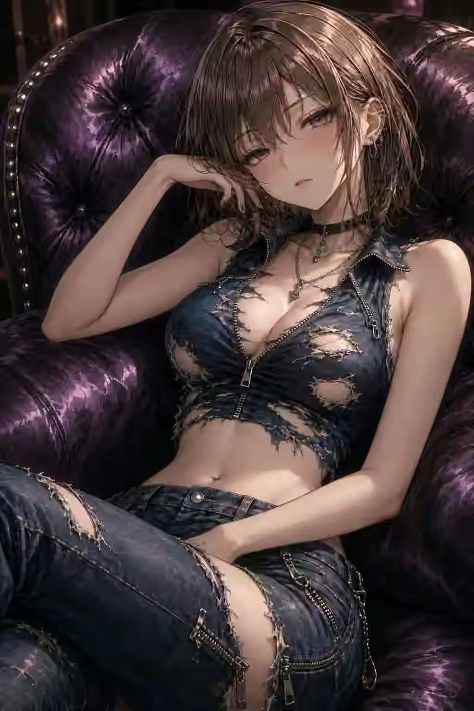

VISITOR 03 / CHARACTER FILE
SILVERHORN
白銀の角姫
THE SILENT PRINCESS ABOVE THE CLOUDS
高い回廊の端で、誰よりも静かに庭園を見渡す白銀の来訪者。
言葉数は多くないが、視線と間だけで空気を変える。騒がしい場所を避け、風と雲の動きを眺める時間を好む。冷たく見えて、距離を許した相手には意外なほど長く付き合う。
QUIETSILVEROBSERVEHIGH SKY
THEME COLORSilver Ice Blue
FAVORITE PLACE最上層の展望回廊
MOTIF角・静寂・高空
03
THIRD VISITOR